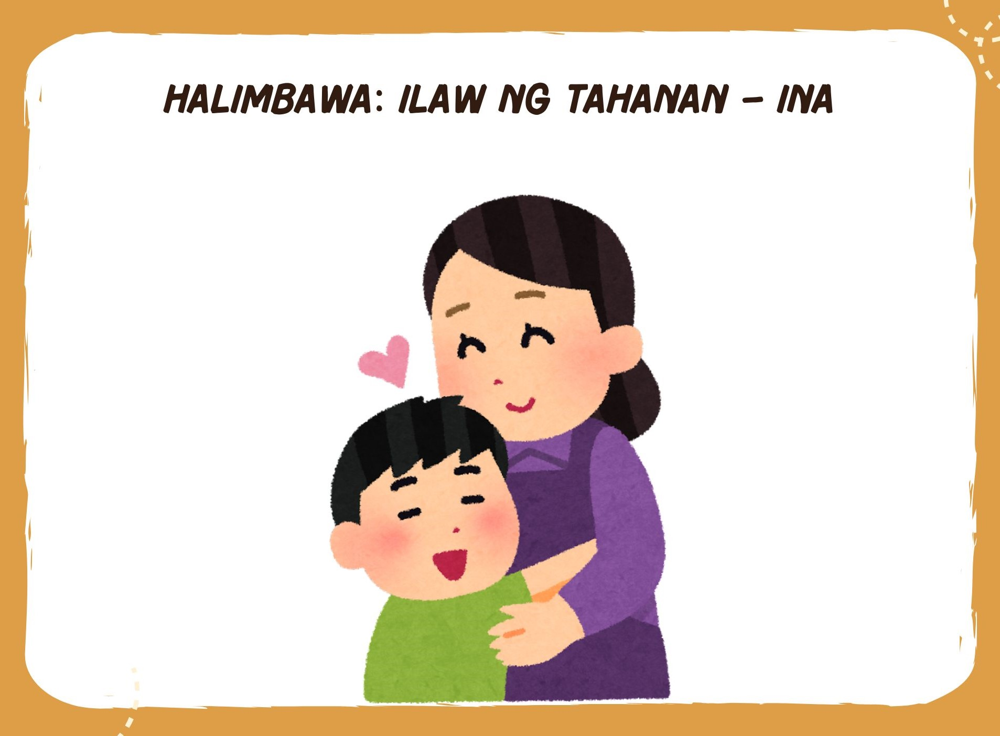
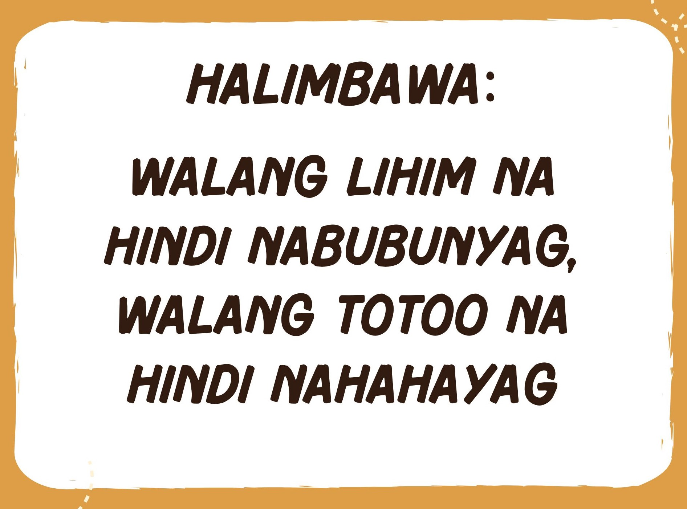
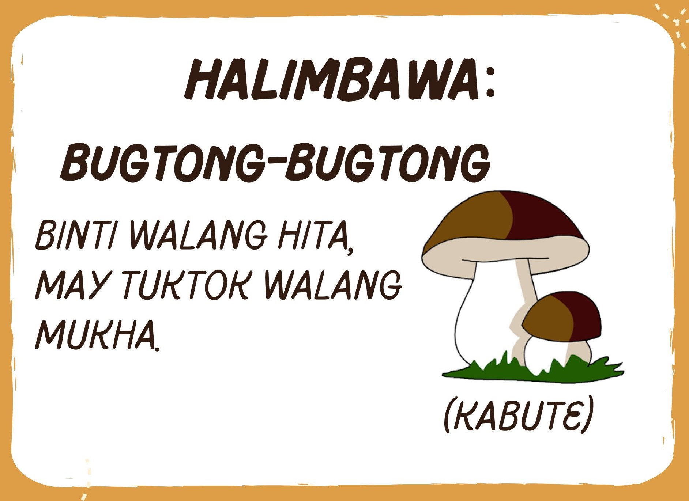
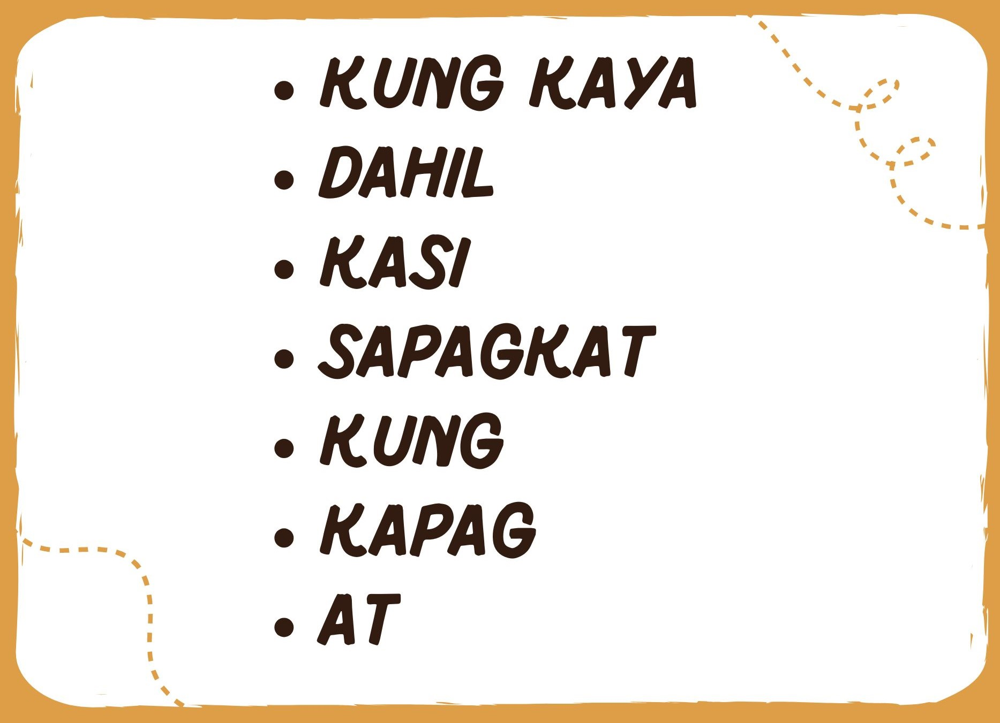
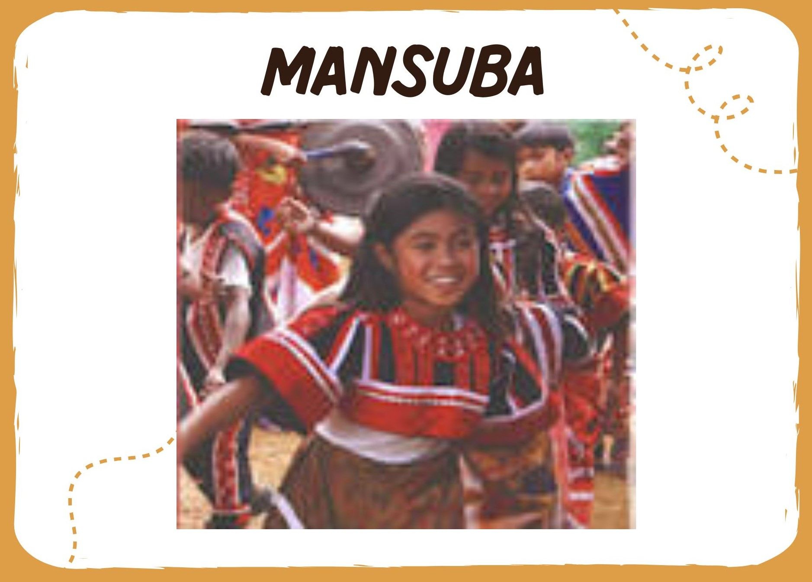
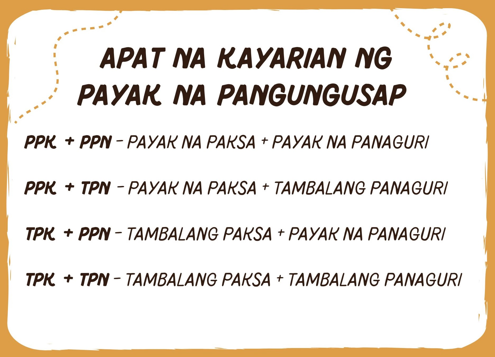

Welcome to Aral.AI
Mas Mabilis, Mas Matalinong Pag-aaral!
Bakit magpakahirap kung puwedeng madali?
ARAL.AI ang iyong katuwang sa pag-aaral—mabilis, masaya, at epektibo.
Simulan na ang tagumpay mo ngayon!
Aralin 1: Panitikan and Karunungang-bayan
Aralin 2: Noon at Ngayong Wika at Gramatika: Paghahambing
Aralin 3: Sanhi at Bunga
Aralin 4: Kayarian ng Pangungusap
Aralin 5: Pagsulat ng Sariling Alamat, Wastong Pagsulat
Aralin 6: Gamit ng mga Bantas
Aralin 1: Panitikan (Kahulugan at Kahalagahan)
at Karununganp-bayan (Salawikain, Sawikain, Kasabihan, Bugtong)
PANITIKAN:
- Ito ay nagmula sa salitang “pang-titik-an” na ang ibig sabihin ay literatura o mgaakdang nasusulat.
- Ito ay naglalaman ng mga akdang may kinalaman sa pang-araw-araw na buhay, mga kathang-isip, pag-ibig, kasaysayan at iba pa.
KAHULUGAN NG PANITIKAN
- Ang pilipinong salita ng “panitikan” ay nanggaling sa wikang latin na “littera” na ang ibig sabihin ay “titik”.
Sa pinakapayak na pagkakalarawan, ito ay angpagsusulat ng tuwiran at patula na nag uugnay sa isang tao.
Isang malinaw nasalamin, larawan, repleksyon o representasyon ng buhay, karanasan, lipunan at kasaysayan.
KAHALAGAHAN NG PAG-AARAL NG PANITIKANG PILIPINO
- Mabatid ang kaugalian, tradisyon at kultura
- Maipagmalaki ang manunulat na Pilipino
- Mabatid ang mga akdang Pilipino
- Mabatid ang sariling kahusayan, kapintasan at kahinaan
KARUNUNGANG-BAYAN
SALAWIKAIN
- Ang salawikain ay mga kasabihan o kawikaan na nagbibigay
o nagpapanuto ngmagagandang aral o gabay sa pamumuhay, sa asal, sa pakikipagkapwa.
SAWIKAIN
- Ang sawikain ay kasabihan o kawikaan na may dalang aral na maaaring tumukoysa isang idyoma,
isang pagpapahayag na ang kahulugan ay hindi komposisyunal omatatalinghagang salita.
Halimbawa: Ilaw ng tahanan – INA
KASABIHAN
- Ang kasabihan ay bahagi na ng kulturang Pilipino. Ito ay ipinasa sa atin ng ating mga ninuno,
ang kasabihan ay nagbibigay ng paalala at mabuting aral sa atin.
Halimbawa: Walang lihim na hindi nabubunyag, walang totoo na hindi nahahayag
BUGTONG
- Isang pangungusap o tanong na may doble o nakatagong kahulugan na nilulutasbilang isang palaisipan.
Halimbawa: Binti walang hita, may tuktok walang mukha. (KABUTE)
Aralin 2: Noon at Ngayon Wika AT Gramati: PAGHAHAMBING
Pag-iisa-isa sa dalawang uri ng paghahambing:
1. Paghahambing ng Pagkatulad
- Ginagamit ito kung ang dalawang ihinahambing ay antas na katangian ng isang bagay o anuman.
Halimbawa: Magkasinghaba ang buhok nina Ana at Elena. Magkasingtangkad kami ni Miguel.
Dalawang Uri ng Pahambing na Magkatulad:
PANLAPI
- Ang PANLAPI ay katagang ginagamit sa hambingang magkatulad.
Kasing-, magka-, at magsing- (pantay na may inihahambing)
D, L, R, S, T (Kasin-, magkasin-, sin-, magsin- at magsing-)
B at P (Kasin-, magkasin-, sin-, magsin- at magsing-)
Halimbawa:
⦁ Magsimbilis ang paglaganap ng mga bugtong at mga salawikain noong unang panahon.
⦁ Kasintalino ng mga makata natin ngayon ang mga ninuno natin sa paglikha ngtula.
KATAGA
- Ang KATAGA naman ay isang salita o parirala na ginagamit upangilarawan ang isang bagay o ipahayag ang isang konsepto, lalo na sa isang partikular na uri ng wika o sangay ng pag-aaral.
Halimbawa: Kapangalan
2. Paghahambing na Di-Magkatulad
- Ginagamit ito kung ang hinahambing ay magkaiba ang antas ng isang bagay o anuman.
Dalawang Uri ng Pahambing na Di-Magkatulad
PASAHOL
Ang PASAHOL ay paghahambing ng mas maliit o may mahabangkatangian halimbawa ang salitang lalo-, di-gaano-, di-lubha-, di-totoo-, at di-gasino.
Halimbawa:
⦁ Ang mga katutubong Pilipino ay di-gaanong marunong sa pagsasalita ngwikang kastila kaysa sa mga Pilipinong naninirahan sa lungsod.
⦁ Di-gasinong matangkad ang mga Pilipino di tulad ng mga Kastila
PALAMANG
Ang PALAMANG naman ay nakahihigit o nakalalamang ang katangian sa isang dalawang pinaghahambing halimbawa na ang lalo, mas, di-hamak, lubha at labis.
Halimbawa:
⦁ Di-hamak na mahusay ang mga Pilipinong lumikha ng tula kaysa sa mga Kastila.
⦁ Labis na masipag ang mga paring Kastila sa pagpapalaganap ng kanilangrelihiyon kaysa sa iba nilang kababayan.
MATATALINGHAGANG PAHAYAG
- Isang katangian ng kulturang Pilipino ang pagpapahalaga ng mabuting pakikitungo at pakikipagrelasyon sa pamilya at sa ating kapwa. Kaya nga, maging noong unangpanahon, gumamit sila ng matatalinghaga o eupemistikong salita upang mangaral at maiwasto ang ugali o kilos ng isang nakababata o nakatatanda na hindi nakakasakit ngdamdamin.
MATATALINGHAGANG PAHAYAG AT EUPEMISTIKO NG PAHAYAG
- Ito ang mga salitang may malalim na kahulugan at pampalubag loob upang palitanang mga salitang masyadong matalim.
Halimbawa: Sumakabilang buhay na sa halip ay na natigok, natepok o natodas.
Aralin 3: SANHI AT BUNGA
Sanhi
- Ang sanhi ay tumutukoy sa pinagmulan o dahilan ng isang pangyayari.
Bunga
- Ang bunga naman ay ang siyang kinalabasan o dulot ng naturang pangyayari.
- Ang pagbibigay ng sanhi at bunga ay tumutukoy sa pinakaugat o dahilan ng isangpangyayari at magiging bunga o epekto nito. Ang ugnayan ng sanhi at bunga ayinihuhudyat ng mga pang-ugnay na maaaring salita o lipon ng salita na tinatawag napangatnig. Ang maayos at tamang paggamit ng mga hudyat ng sanhi at bunga aynakakatulong upang maipahayag ang paksa nang malinaw at mabisa.
Narito ang mga salita na nag-uugnay ng sanhi at bunga:
Epiko
- Tumatalakay sa kabayanihan at pakikipagtunggali ng isang tao o mga tao laban samga kaaway. Halos hindi kapani paniwala ang mga tagpuan dahil makakabalaghan ang mga ito.
Manobo
- Ang ibig sabihin ng salitang “manobo” ay “tao” o “mga tao”, na ito ay galing sa salitang “mansuba” na hango sa dalawang salitang “man” na ibig sabihin ay tao; at “suba” na nangangahulugang “ilog”, samakatuwid ang kahulugan ng “mansuba” ay “taong-ilog”.
Dalawang bahagi ng Pangungusap
Sinumo
Ang paksa ang pinag-uusapan. Pinangungunahan ng pantukoy na pambalanang ang, ang mga o pantukoy na si at sina.
Halimbawa:
Ang mga bata ay nagbabasa ng aklat.
Ang bahay nina Aling Corazon ay di naman pala
Panag-uri
Naglalarawan sa simuno o paksa. Sinusundan ng panandang “ay”
Halimbawa: Ang puno ay tinumba ng bagyo.
Aralin 4: KAYARIAN NG PANGUNGUSAP
1. Payak na pangungusap
- May isang buong diwa at kaisipan.
Halimbawa:
Ang pagdarasal ay di dapat kalimutan.
Ang tamang pagkain ay dapat nasa oras.
Mga paraan sa pagbuo ng Payak na Pangungusap
 a. PPk + PPn - Mabuting tao ang nakatira sa bahay na iyan.
b. PPk + TPn - Talagang mapagkakatiwalaan at maaasahan ang mga pangkat ng mga mag-aaralmula sa Mangga.
c. TPk + PPn - Magkaklase sina Rita, Ken, Julie at Rayver.
d. TPk + TPn - Ako at ang aking kapatid ay mag-aaral sa umaga at magtatrabaho sa gabi sa darating na pasukan.
2. Tambalang Pangungusap
- Binubuo ng dalawa o higit pang sugnay na makapag-iisa na pinag-uugnay ng mgapangatnig tulad ng at, at saka, o pati, subalit, datapwat, habang at iba pa.
- May 1 buong diwa at kaisipan.
2PPng. + Ptg. (2 Payak na Pangungusap + Pangatnig)
Halimbawa: Pinameryenda ko muna si Aling Luisita habang hinihintay niya ang aking ina.
Gusto niyang magpatuloy ng pag-aaral sa Pamantasan subalit kakapusin siya ng martikula.
3. Hugnayang Pangungusap (1SM + ISDM)
- Binubuo ng isang punong sugnay at isa o mahigit pang katulong na sugnay
Halimbawa: Si Lina ay madaling makapag tapos sapagkat masipag mag-aral.
1PPng. + 1SDM + Ptg. 1 PAYAK NA PANGUNGUSAP + 1 SUGNAY NA DI-MAKAPAG-IISA + PANGATNIG
Sungay na makapag-iisa
- Nagbibigay ng isang buong diwa at maaring ituring na ganap na pangungusap.
Halimbawa: Nagpasalamat si Shane Marie kay Angelo.
Sugnay na di-makapag-iisa
- Mayroon itong simuno at panaguri ngunit hindi buo ang diwa kaya gumaganaplamang bilang bahagi ng pananalita tulad ng sugnay na pang-uri, sugnay na pang-abay at sugnay na pangngalan.
Halimbawa: Ang ingay na narinig ko kanina ay mula sa kusina.
WIKANG PILIPINO
- Ang wikang Pilipino ay mayaman at hitik sa maraming klase ng panitikan. Gabay ito at gamit ng ating mga linggwistiko at mga manunulat sa paglimbag at paglathala ng mga iba’t ibang uri ng babasahin. Isang uri ng panitikang Pilipino ang matalinhagang salita.
Aralin 5: PAGSULAT NG SARILING ALAMAT, WASTONG PAGSULAT
(Paggamit ng malaking letra)
Gamit ng Malaking titik
1. Sa simula ng pangungusap
- Ang unang titik sa isang pangungusap ay nagsisimula sa malaking titik
Halimbawa:
Ang magkaibigan ay nag-uusap.
Marami akong paboritong basahin.
2. Sa Tiyak na PANGNGALAN (Nouns)
- Ang lahat na tiyak na ngalan ng TAO, BAGAY, LUGAR, PANGYAYARI at HAYOP ay nakasulat sa malaking titik.
Halimbawa:
Anna – TAO
Mongol - BAGAY (lapis)
Bohol – LUGAR
Pasko – PANGYAYARI
Aantay - HAYOP (aso)
3. Sa pamagat ng aklat o palabas
- Ang mga aklat, ang kwento ganoon din ang mga palabas ay ginagamitan ngmalaking titik. Ang bawat salita ay nagsisimula sa malaking titik.
Halimbawa:
Ang Pagbabago sa Buhay ng Batang si Jose - (pamagat ng kwento)
Noli Me Tangere - (pamagat ng aklat)
Going Bulilit - (palabas)
TV Patrol - (palabas)
Aralin 6: Wastong Pagsulat: Gamit ang Bantas
1. TULDOK (.)
- Ang tuldok ay ginagamit na pananda: Sa katapusan ng pangungusap na paturol opasalaysay at pautos.
Halimbawa: Igalang natin ang Pambansang Awit.
2. PANANONG (?)
- Ginagamit ang pananong sa pangungusap na patanong.
Halimbawa: Ano ang pangalan mo?
Sasama ka ba?
3. PADAMDAM (!)
- Ang bantas na padamdam ay ginagamit sa hulihan ng isang kataga, parirala opangungusap na nagsasaad ng matindi o masidhing damdamin.
Halimbawa: Mabuhay ang Pangulo!
Uy! Ang ganda ng bago mong sapatos.
Aray! Naapakan mo ang paa ko.
4. PAGGAMIT NG KUWIT (,)
- Ginagamit din ang kuwit sa paghihiwalay ng isang sinipi sa paghihiwalay ngmagkakasunod na salita at lipon ng mga salitang magkakauri.
Halimbawa: Kumain ka ng itlog, gulay at sariwang bungang-kahoy.
5. PAGGAMIT NG KUDLIT (‘)
- Ginagamit na panghalili ang kudlit sa isang titik na kina-kaltas.
Halimbawa: Siya’t ikaw ay may dalang pagkain.
Ako’y mamamayang Filipino at may tungkulin mahalin at pangalagaan ang aking bayan.
6. PAGGAMIT NG GITLING (-)
- Ginagamit ang gitling (-) sa loob ng salita sa mga sumusunod na pagkakataon: Sapag-ulit ng salitang-ugat o mahigit sa isang pantig ng salitang-ugat.
Halimbawa: araw-araw, isa-isa, apat-apat, dala-dalawa, sari-sarili, kabi-kabila, masayang-masaya
7. TUTULDOK (:)
- Ginagamit matapos maipuna ang pagpapakilala sa mga sumusunod na paliwanag. Ginagamit kung may lipon ng mga salitang kasunod.
Halimbawa: Maraming halaman ang namumulaklak sa hardin tulad ng: Rosal, Rosas, Orchids, Sampaguita, Santan at iba pa.
8. TUTULDOK KUWIT (;)
- Ito ay naghuhudyat ng pagtatapos ng isang pangungusap na kaagad sinusundanng isa pang sugnay nang hindi gumagamit ng pangatnig. Maaaring gumamit ng tuldukuwit sa halip na tutuldok sa katapusan ng bating panimula ng lihampangalakal.
Halimbawa: Ginoo;
Bb;
9. PANIPI (“ ”)
- Inilalagay ito sa unahan at dulo ng isang salita. Ginagamit upang ipakita angbuong sinasabi ng isang nagsasalita o ang tuwirang sipi.
Halimbawa: “Hindi kinukupkop ang criminal, pinarurusahan,” sabi ng Pangulo.
10. PANAKLONG ( () )
- Ang mga panaklong ay ginagamit na pambukod sa salita o mga salitang hindidirektang kaugnay ng diwa ng pangungusap, gaya ng mga ginamit sapangungusap na ito. Ginagamit upang kulungin ang pamuno.
Halimbawa: Ang ating pambansang bayani (Jose Rizal) ang may-akda ng Noli MeTangere.
11. TUTULDOK-TULDOK O ELIPSIS (…)
- Nagpapahiwatig na kusang ibinitin ng nagsasalita ang karugtong ng nais sabihin. Upang ipakilalang may nawawalang salita o mga salita sa siniping pahayag. Tatlong tuldok ang ginagamit kung sa unahan o sa gitna ng pangungusap ay maynawawalang salita.
Halimbawa: Pinagtibay ng Pangulong Arroy… B. Sa mga sipi, kung may iniwang di-kailangang sipiin.
Kung ikaw’y maliligo sa tubig ay aagap upan...